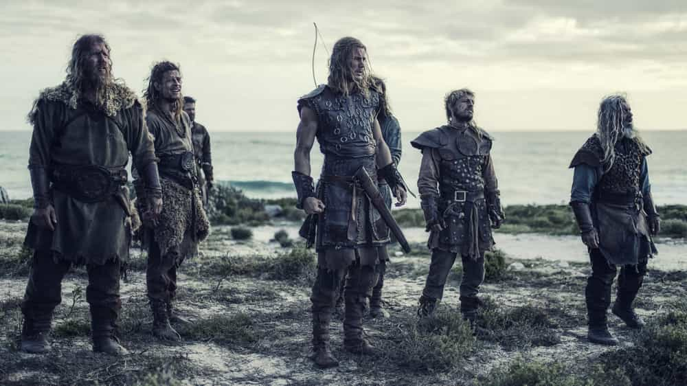
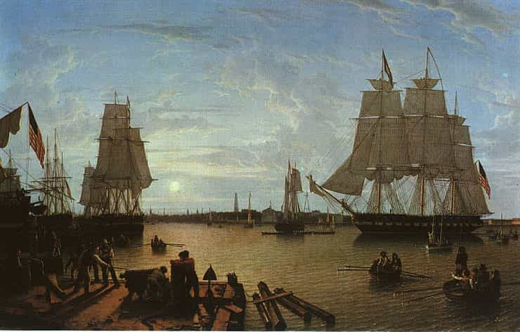

< < < Back
How Patriarchy Evolves Into Matriarchy – Return Of Kings
It seems that there is a large number of self proclaimed feminists out there (particularly in the West) who hold the belief that men are actively, consciously preventing them from gaining any power in the world, and scheming, behind the scenes, to perpetuate the patriarchy that we’ve created.
As an ROK reader, you likely know that this is entirely false.
For the sake of clarity, however, I would like to explain just how patriarchy arises over time, and how it eventually evolves into a matriarchy. I will be looking to disciplines such as anthropology, history, and evolutionary biology, to make my case, rather than looking inside to the, oh-so-common cited “muh feels.”
The Tribal Stage
Rather than trying to look at multiple civilizations and their evolution, which I believe has its merits, but would confuse the matter, let us look at how anthropologists think that ancient cities might have evolved over time.
As we all know, most civilizations started from a mere tribe—a collection of maybe 50 or so men, women, and children. This tribe would likely exist in a very dangerous environment, something which SJW’s (and even us, to an extent) cannot begin to comprehend today.
I cannot overemphasize the danger that surrounded humanity for the vast majority of history; at any given moment, you may be killed by a lion, disease, a food shortage, or an enemy tribe may invade your little village and slaughter you all. So, faced with such dire consequences, what do you think happened? A PC-culture where feelings are more important than the fact that there’s an enemy tribe 100 yards away that could kill you all at any time?
Fuck, no. I’ll tell you what happened: the birth of patriarchy.
The Birth Of Patriarchy

Patriarchy evolved as a culture and political structure, due to its sheer effectiveness. When you’re surrounded by a massive amount of danger, what do you think your tribe’s priority will be? Protect the women. If you don’t have any women, you can’t reproduce, and your tribe will die off. It’s that simple.
You can have just 3-4 men, but as long as you have 40-50 women, you’ll be able to live on as a tribe. But if you only have 3-4 women? It doesn’t matter how many men you have, you can only give birth to 4 babies a year (2 of which will likely die). Thus, patriarchy, contrary to modern belief, did not evolve to oppress women, but to protect women.
Now, of course, some modern day feminazi may say “WE DON’T NEED YOUR PROTECTION!” to which I would reply, no shit.
Modern day women don’t need our protection, because we have daddy government, a system that MEN built, doing that for them. They don’t need our protection, because we’ve busted our asses making a relatively stable civilization, which, ironically enough, they’re threatening by creating a culture that values feelings more than facts.
Regardless, the men were tasked with the life-threatening work, because they understood that they were expendable, while women were not. The men were out hunting birds, deer, buffalo, gazelles, and whatever the fuck else they could find depending on their geographical location.
This is how the masculine virtues evolved—men needed to be able to rely on one another, so over time, a culture that praised honor, reliability, strength, courage, and loyalty, developed.
A lot of these noble men died hunting and in battle, but that was better than any of the women dying. The women were tasked with staying at the “home base,” or their small village nearby, and doing less dangerous tasks, such as picking berries, tending to the children, and sewing clothing for the warriors.
Cultural Evolution
![Evolution-des-wissens[1]](wp-content/uploads/2016/07/Evolution-des-wissens1.jpg)
I really want to hammer home the fact that patriarchy is MUCH more than a “political system,” as most people might think. It’s an economic system, a culture, it’s a way of life.
And what’s important to realize, is that this “way of life,” that a smaller tribe of 50 people might have, will be passed down generation to generation, because the older men understand that this is how you preserve the tribe: by preserving patriarchy.
To emphasize the fact that patriarchy is a culture, let me give you an example. Let us say that all of the men and women are home, around a fire, eating dinner. One of the warriors, a man who the other men respect greatly, speaks up: “A friend from the tribe to the south has told me that the northern tribes are planning an attack.”
What do you think would happen nowadays if somebody brought up bad news at the work place lunch table, or at a corporate dinner? The women in the group, and the chodes of the group, would likely use all manner of social pressure to get him to shut the fuck up.
They’d ignore him, they’d berate him, they’d tell him to stop being so negative, or they’d just spout a delusional: “Oh, we’ll be fine! So anyways, yeah—Jenny we should go grab drinks after this! I heard that Icon has a great selection of cosmos!” This is because we have a “matriarchal culture,” but more on this later.
If a woman, in our previous tribal example, had said: “Oh the tribe from the north is fine, don’t worry about them! Why are you ruining the vibe?” or some other silly nonsense, what do you think would have happened? Definitely not what would happen today.
The men in the group would likely tell her to shut the fuck up, because this is a matter that concerns all of their safety and it needs to be discussed. This is the power of a patriarchal culture. In fact, if the alpha male warrior of the group brought up a serious concern such as this, the women would likely not even say anything, because they would have known it isn’t their job to decide on matters of war and alliances.
So, this culture of patriarchy, that values facts more than feelings (although it obviously still values feelings, it isn’t completely heartless), would be passed down through the generations. Over time, the tribe would grow. Alliances would take place, and sooner or later, we start to have a large village, or even a town.
The Large Village Stage
![Travel-To-Switzerland-Small-Swiss-Village-Settlement-Saas-Balen-of-Wooden-Slate-Roof-Houses-in-Saas-Valley-Canton-Valais-Switzerland-1600x1200[1]](wp-content/uploads/2016/07/Travel-To-Switzerland-Small-Swiss-Village-Settlement-Saas-Balen-of-Wooden-Slate-Roof-Houses-in-Saas-Valley-Canton-Valais-Switzerland-1600x12001.jpg)
Now, due to the efficiency of patriarchy, we have a village that is comprised of 2,000 people. Because of patriarchy, there is ample food, shelter, and supplies.
Over time, the men started to realize that they don’t all need to hunt. They can just task the best hunters with hunting, and they’ll have more than enough food for everyone. And maybe some of the men are really great at making weapons, whether from rock, bronze, or iron, so they’re tasked with making weapons to supply the warriors with a means to protect the village and hunt for food.
In other words, what happens is that the men start to specialize in more “rough” and dangerous jobs: blacksmiths, leather tanners, hunters, warriors, animal tamers, and the like. Women, however, are still kept safe: the general culture of patriarchy pervades. Women are still tasked with cooking, sewing, and tending to the children. That is, after all, the job designation that allowed this large village to flourish.
There are still occasional bouts of violence within the village. Maybe a marauding band of barbarians occasionally finds the village, and the men need to defend it. It doesn’t have to happen that often, maybe once every decade or so, in order to keep patriarchy in place.
The problems start to happen when the large village becomes TOO affluent, and eventually starts to evolve into a series of large villages, or a small “nation,” so to speak.
The Small Nation Stage

This is when, again, due to the effectiveness of patriarchy, we start to see the emergence of the third component of patriarchy: the economic structure. As the large village grows more and more, it starts either spreading out to various outposts strategically located near water or herds of prey, and it starts even making alliances with various other tribes of small villages.
Soon, a bartering system emerges—gold and other precious metals are accepted as currency, but there isn’t an official currency…yet. The culture of patriarchy starts to weaken in the main village that we’ve been following, which at this point has evolved into a town.
Our nation now consists of roughly 30,000 people, and our main town is comprised of 10,000. As society has shown us over the years, the town will be the first to go. Why? Well, it’s simple—the town isn’t surrounded by danger. It’s the epicenter of trade, and it’s surrounded by various outposts and villages that will fend off invaders far before the town folk have to do anything. Thus, due to this newfound security, men start specializing even further. They become bankers, traders, merchants; some create boats, some are experts with wood, or with making jewelry.
Patriarchy still reigns supreme, but it’s starting to weaken—the women in the town are starting to realize that there’s very little danger surrounding them, but interestingly enough, they don’t even care. They’ve been fine with the old system for their whole lives, because their fathers were good to them, and they were never given the “rebellious spirit” that so many women have today.
But…one day the town drunk has a young girl. Over the years, the men in the town do what they can to try to stop him from hurting her, but he’s an asshole and they can’t do much about it. Over time, more and more drunks and degenerates start to appear, mainly from the upper class, because not everyone is required to work. Most people are, but a few wealthy merchants and bankers can afford to have their children remain idle.
This is crucial to remember: the upper class is almost always indicative of where the middle class will be in several decades, and the middle class is always indicative of where the lower class will be in several decades.
Due to more and more absentee fathers and drunks (which again, arises out of too much safety), we have a bunch of young girls being raised that have severe anger towards their fathers (rightfully so).
The Birth Of Feminism
![6360187943868159711943224760_635910163086039953-2135351745_635869567789769950311771251_ineedfeminismbecause[1]](wp-content/uploads/2016/07/6360187943868159711943224760_635910163086039953-2135351745_635869567789769950311771251_ineedfeminismbecause1.jpg)
Now our nation is bustling along, with a large amount of commerce occurring between our town, the various villages and outposts, and even neighboring nations.
The young angry women that I mentioned before, however, are starting to become more vocal. They’re angry that they were raised by evil men, and thus are afraid of men having too much power. They start to get it into the heads of the younger generation that they don’t need men anymore, and that they should be able to own land, get jobs, and eventually…even vote.
There’s a lot of resistance from the older generations, who still remember the patriarchal ways that allowed this nation to achieve its state of bustle and prosperity, but as they begin to die off, the new ideology creeps into the hearts of women like a cancer. Slowly, but surely, the tides start to turn: our nation is on the tipping point between being a patriarchy and a matriarchy.
Due to the safety of this nation, which, AGAIN, patriarchy created, there’s a lot of idle time. People grow wealthy, and affluent. This breeds hedonism, a loss of virtue, and a valuing of feelings more than facts; of the short term over the long term. Even if it’s only in a few people, that’s all it takes—now, due to the dying off of the old patriarchs, women have the right to own land, work jobs, and even vote.
But in the major industries, patriarchy still reigns supreme: mercantilism, war, and trade. This is because anytime someone in these industries values feelings more than facts, they get slapped in the face by reality.
Oh, you just think it’d feel really good if you don’t need to protect your ship loaded with goods? Okay, then you’ll get raided by fucking pirates and lose a large portion of your wealth.
Oh, you just think it’d be really nice and sweet if you could make an alliance with one of the neighboring villages that’s been showing signs of aggression? Okay, then they’ll fucking attack you and you’ll lose 500 civilians before you get your head on straight.
In the less dangerous professions, however, the culture of the matriarchy is spreading. Matriarchal culture values:
- Cooperation over competition
- Feelings over facts
- Equality over natural differences
- Agreement over disagreement
Obviously cooperation, feelings, equality, and agreement all have their place, but the key difference with patriarchy is that these things aren’t prioritized, even in the face of an uncomfortable truth.
A Civilization Is Born
Now, again, due to the superiority of patriarchy, a civilization is born. Our once small tribe, has now evolved into a civilization spanning hundreds of miles, comprised of half a million people. Women were previously allowed to vote, to own land, and to work, but up to this point, these things haven’t caused too much trouble. This is about to change.
Previously, plenty of women chose NOT to do these things, because they realized that it doesn’t make women happy. Over time, however, as the insidious seed of feminism is spread, more and more women clamor for more and more power. At this point, our society is starting to lean much more towards a matriarchal society than a patriarchal one.
Patriarchy only exists at one place: the top. Politicians, business owners, investors, bankers…why? Because you can’t become a rich and successful man if you’re a completely effeminate pussy. Regardless, the spoiled women of the newer generation see a bunch of men in power, and they attack these men for “oppressing” women, rather than applauding them for having the virtues to rise above the rest.
Due to massive pressure from the younger women, and even men (chodes are starting to emerge), politicians are forced to implement more policies in favor of women. Now, more women are in the workplace. More women are politicians, more are bankers, less and less women are mothers, and it’s even frowned upon to be a housewife (is this ringing any bells?).
Total Matriarchy
As our society becomes more and more wealthy and spoiled, and as the older generations of men who understand the importance of masculinity die off, the younger generations start to take over. Now, we have a full blown society that values feelings more than facts (not unlike today).
And you know what? They get along just fine—for a while. The patriarchy that came before them set up a huge moat. Because of the hard work of men in the past, our current civilization can afford to be frivolous, nonsensical, and overly-emotional…for a while.
Slowly, but surely, less and less innovation occurs due to female competition at the workplace. Wages plummet as immigrants rush into the country, because it feels good to let them in. Birth rates drop, as more and more women are working, too busy to start a family, and sooner or later, men who believe in masculinity become part of a fringe group (again, is this ringing any bells?).
But then, the men who still cling to the old ways, start to notice something: a nation to the north has been awfully aggressive as of late. They’ve been roaming our land freely, and have been attacking several outposts, unchecked. The feminist indoctrinated youth and politicians clamor that “Maybe we should give them citizenship! We need to educate them and help them!”
Again, this should sound eerily familiar.
The fringe groups of masculine men know that this is utter bullshit, so they’re as vocal as possible, but nobody listens to them—the masses are far too many and far too stupid. The masculine outcasts do what they can to restore patriarchy, and they’re successful in their own little pockets of life, but not on a broad scale. The indoctrination runs too deep; it’s hard to undo the momentum of the last 5 generations passing down false knowledge to their youth.
The Collapse
Eventually the barbarian groups realize just how pathetic this civilization is, and band together to end it once and for all.
Side note: do you think the barbarian wanderers have a patriarchal society or a matriarchal society?
By the time that everyone realizes they’re fucked, it’s too late. There’s no standing army, and even if there were, half of it would be comprised of women. They’re economically weak, due to stupid, emotionally driven policies. Their entire internal infrastructure has been weakened by decades of feminism, which has made them susceptible to invasion.
The barbarians manage to rape and pillage all of the surrounding villages, outposts, and towns, until they reach the epicenter of our civilization, the once tiny tribe, that is now a huge city.
The once self-proclaimed feminists beg for help from the men, but because they’ve been brainwashed into being giant chodes for the last several generations, they’re far too weak to do anything. They can’t think rationally in the face of danger, they aren’t physically fit, and they lack the decisiveness that men need to be successful. Our civilization is completely overrun by barbarians, and burnt to the ground—a true tragedy.
Several small groups of men and women managed to flee unharmed, however—who do you think these men were? The fringe groups, of course. They recognized the insanity of those surrounding them, so they were smart: they stockpiled supplies and weapons. They planned escape routes, and maybe some of them even built a little cabin in the mountains, miles and miles away.
Some 100 or so men and women manage to flee to these little cabins and huts that the smarter men had set up years ago, in case of disaster. Now, it’s time to rebuild.
The Cycle Continues
We can predict, with almost 100% accuracy, that our new “tribe” will follow the EXACT same pattern as the first one. I hope that you men are taking notes, because what I’m about to tell you is perhaps one of the most important lessons of history. Society repeats itself.
Yup—society has always oscillated between being a strong patriarchy and a strong matriarchy, and so far, it continues to do the same. Patriarchy leads a society to affluence, which leads it to matriarchy, which makes it vulnerable to external threats, which leads it to collapse. Then, the survivors rebuild, and model a similar patriarchal structure as the very tribe that founded their once great civilization.
This is the great secret of ages; the lessons that have been passed down by men such as Will Durant and Sir Thomas Glubb. The wise men of the past have always known that society repeats itself, but their influence has been too small to stop it. All of this is about to change.
The Information Age
Although I’m not very hopeful for the future of America (it saddens me to say this), I believe that we are soon going to FINALLY defeat this wicked cycle. We live in the age of information; knowledge is transferring from person to person at a completely unprecedented rate, and this rate is growing exponentially.
I firmly believe that if enough men understand this concept of “cyclical civilizations,” we will be able to stop it.
For now, there isn’t much we can do except prepare for the upcoming collapse of America. Invest your money, so that you can afford to either withstand hard financial times, or leave the US entirely. Educate yourself and grow as a human being, so that you will have the understanding and skills necessary to rebuild society from the ground up.
And finally…get ready for the shit to hit the fan. Now is the time to buy a gun.
 If you like this article and are concerned about the future of the Western world, check out Roosh's book Free Speech Isn't Free. It gives an inside look to how the globalist establishment is attempting to marginalize masculine men with a leftist agenda that promotes censorship, feminism, and sterility. It also shares key knowledge and tools that you can use to defend yourself against social justice attacks. Click here to learn more about the book. Your support will help maintain our operation.
If you like this article and are concerned about the future of the Western world, check out Roosh's book Free Speech Isn't Free. It gives an inside look to how the globalist establishment is attempting to marginalize masculine men with a leftist agenda that promotes censorship, feminism, and sterility. It also shares key knowledge and tools that you can use to defend yourself against social justice attacks. Click here to learn more about the book. Your support will help maintain our operation.
Read More: Why We Need to Fight For The Patriarchy